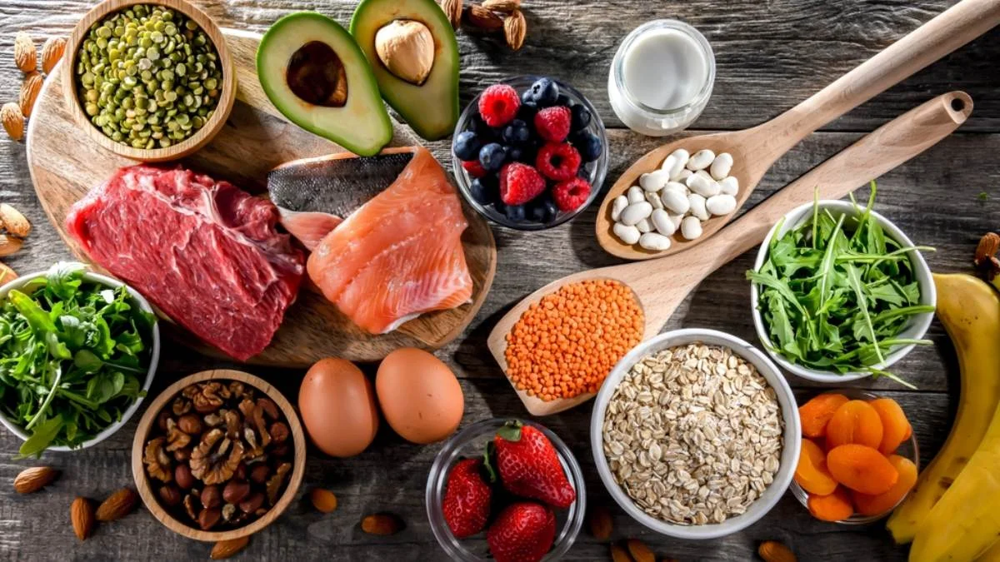

Por qué Sistemas Alimentarios
Los sistemas alimentarios son uno de los sectores con mayor impacto social y ambiental a nivel mundial. Al mismo tiempo, tienen el potencial no solo de transformar los estándares dentro de su propia industria, sino también de influir en muchas otras, debido a la fuerte interconexión de sus efectos sociales y ambientales.
Invertir en sistemas alimentarios es apostar por un sector estratégico, con alto impacto ambiental y social. Invertir en alimentos es invertir en salud, trabajo y desarrollo territorial.
Lo que está en juego
El costo real de los sistemas alimentarios
Crisis Ambiental
de emisiones de gases de efecto invernadero (GEI)
Malnutrición y desperdicio
de personas que sufren de hambre
Desigualdad
de alimentos de pequeños productores, en vulnerabilidad
Fuentes: Poore & Nemecek (2018); Datos FAO Aquastat (2017); Pendrill et al. (2019); FAO (2015, 2020, 2022); World Resources Institute (2018); IPCC 6º Informe de Evaluación (2022); ONU.
Marco de impacto Capibara
Acompañar el propósito de otros se traduce en tres compromisos:
Con cada empresa
Medir y potenciar su impacto propio (portafolio).
Con el sistema
Sumar a lo que cada empresa construye: más mercado, más legitimidad, más red.
A nivel interno en Capibara
El propósito en cada decisión, también cuando cuesta. Y nos medimos igual que a todos.
Portafolio de Impacto
Alimentación saludable y accesible
Regeneración ambiental
Producir con dignidad
"Cuidar lo que nos sostiene"
Cómo medimos lo que hacemos
Antes de invertir
- Evaluamos propósito e impacto de cada empresa
- Co-construimos 1 o 2 métricas de materialidad y relevamos su punto de partida
- Verificamos riesgos ESG
- Blindamos el propósito en los contratos
Durante la inversión
- Participamos en la gobernanza
- Medimos los indicadores de impacto acordados
- Generamos sinergias entre empresas del portafolio
Reportamos
- El impacto propio de cada empresa
- Lo que sumamos al sistema como portafolio
- Cómo nos medimos a nosotras y nosotros mismos